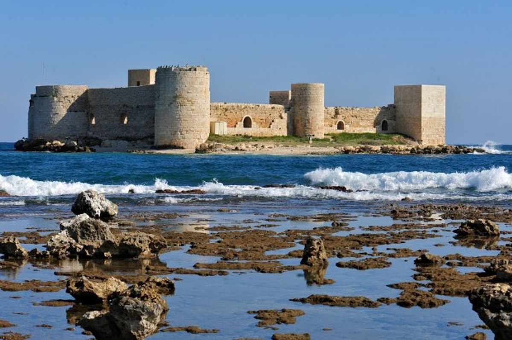
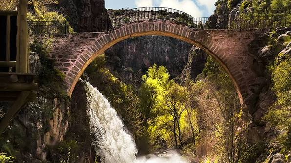
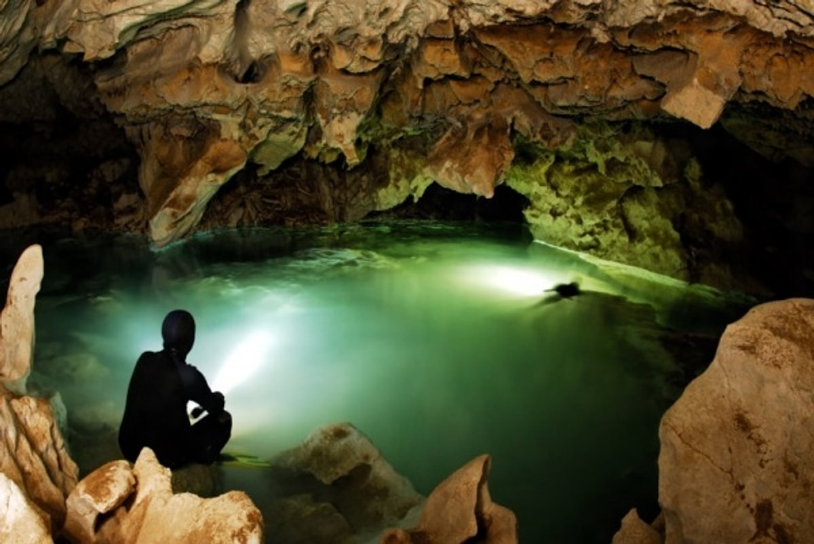
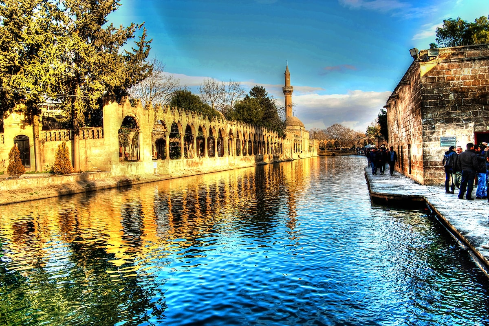
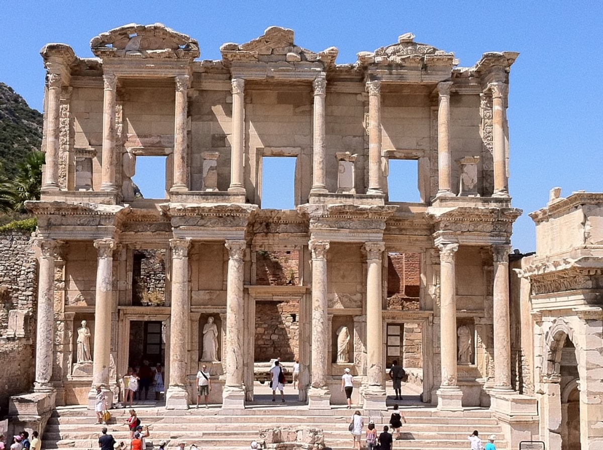
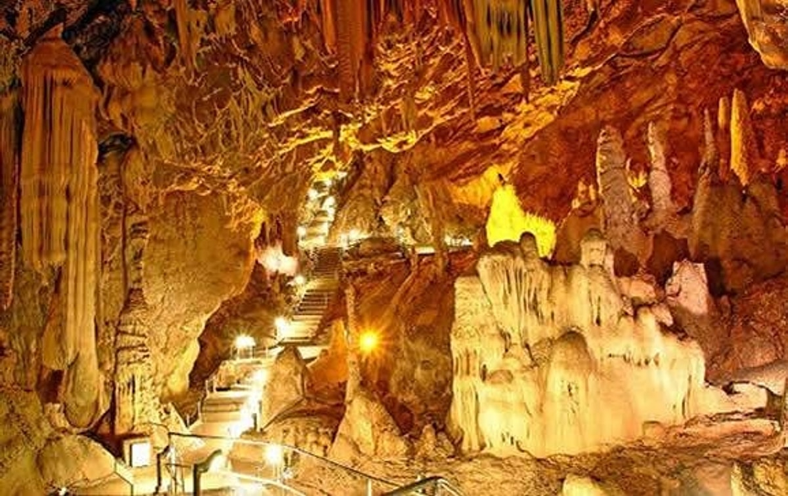
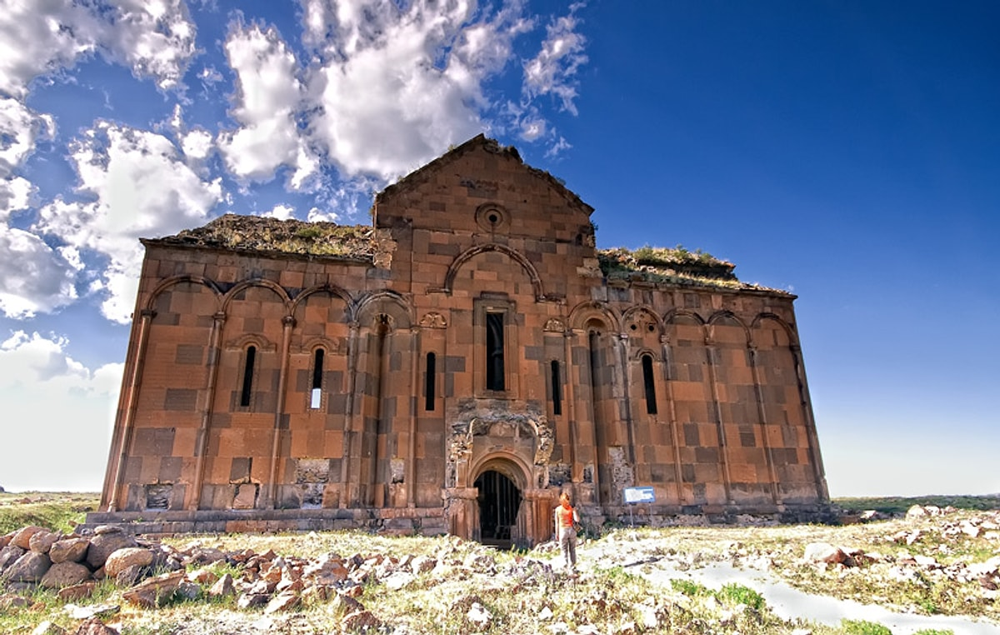

Kızıl Kalesi
7 gün . Zorlu

15 KİŞİ . 30 GÜN . 81 ilin güzel şehirleri
Türkiyenin Rotası, kalabalık turlarla, gerçek rotalarda büyük gruplarla ilerleyen bir keşif stüdyosudur.
Rotaları Keşfet
milyonlarca yıldır Anadolu'da oluşan tarihi güzellikler ve kültürel doğal güzellikleri ,gezginleriyle birlikte her rotayı birlikte geziyoruz.Ekibimiz dağcılık, fotoğrafçılık ve yerel tarih üzerine uzmanlaşmış rehberlerden oluşuyor.

7 gün . Zorlu

14 gün . Zorlu

18 gün . Zorlu

20 gün . Zorlu

24 gün . Zorlu

30 gün . Zorlu
bu rotada her gün gerçekten unutulmaz bir şey oldu.
Grup büyüktü,rehberler harikaydı. kesinlikle tavsiye ederim.
Fotoğraf molaları için ayrılan zaman fark yaratır.
Soruların yaz, 24 saat içinde dönüş yapalım.